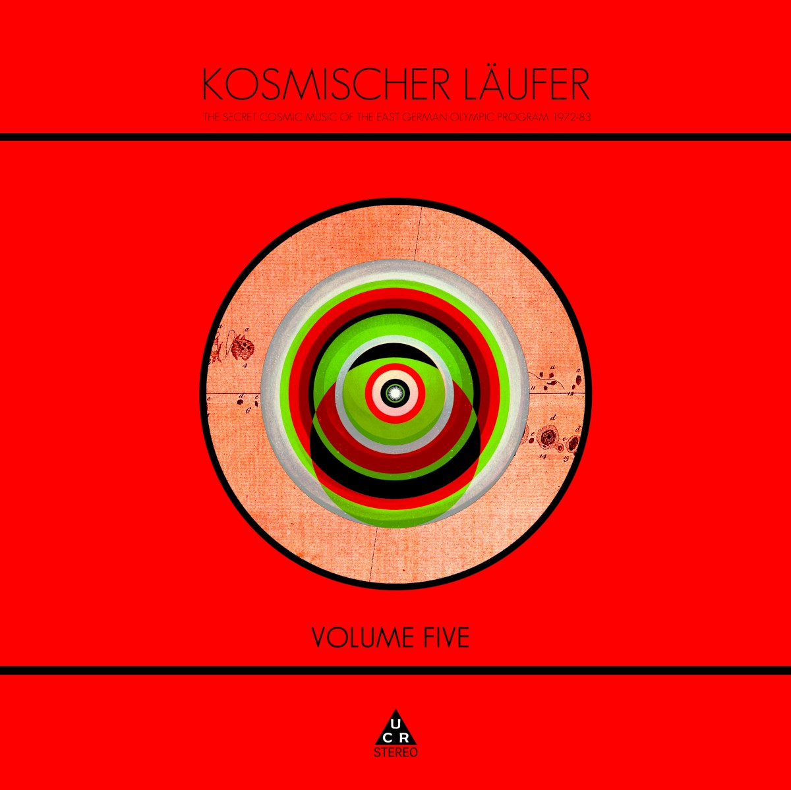

Kosmischer Laufer - The Secret Cosmic Music of the East German Olympic Program 1972 83 Volume Five



Información del álbum facilitada por discogs.com:
Fecha de lanzamiento: 2023
Géneros: Electronic, Rock
Estilos: Ambient, Krautrock
Pais: UK
Votos: Media de 5.0 con 2 votos
Sello: Tekfexious
Distributed By: Label Worx
Tracklist:
. Laufprogramm 180
A1. Zeit Zum Laufen 180 3:38
A2. Der Kosmische Strahl 6:38
A3. Schreibmaschine 5:41
A4. Im Herzen Des Universums 3:47
. Jahre Der Ruhigen Sonne
B1. Die Stille Sonne (Teil 1) 2:30
B2. Sonnenfleck I 1:15
B3. Nordlicht 5:12
B4. Sonnenfleck II 1:15
B5. Südlicht 4:40
B6. Sonnenfleck III 1:02
B7. Die Stille Sonne (Teil 2) 5:33
CD1. Zeit Zum Laufen 180
CD2. Der Kosmische Strahl
CD3. Schreibmaschine
CD4. Im Herzen Des Universums
CD5. Die Stille Sonne (Teil 1)
CD6. Sonnenfleck I
CD7. Nordlicht
CD8. Sonnenfleck II
CD9. Südlicht
CD10. Sonnenfleck III
CD11. Die Stille Sonne (Teil 2)